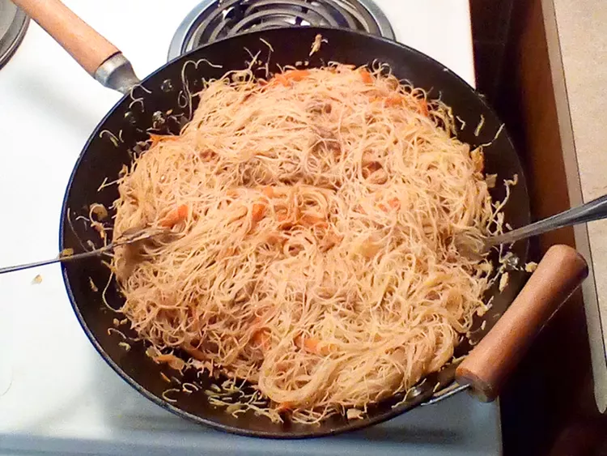

Lumpia Recipe

Description
This is how you make Pancit acording to this couple on the intternet. Now to me the noodles in the photo look a little thin but I think thats becomes when my mom doesn't have the thin noodles she uses the thick noodles? Look I don't know stop questioning me and get on with learning how to cook this delucious meal
Ingrdients
- boneless chicken thighs
- 1 (8 ounce) package dried rice noodles
- 2 tablespoons soy-based liquid seasoning (such as Maggi®), or to taste
- 3 tablespoons olive oil, divided
- 1 tablespoon sesame oil
- 3 cloves garlic, chopped
- 1 medium onion, chopped
- ½ large head cabbage, thinly sliced
- 2 carrots, julienned
- 1 teaspoon garlic salt
Steps
- Bring a pot of water to a boil over high heat. Add chicken thighs and boil until no longer pink in the centers and juices run clear, about 30 minutes. Strain broth into a bowl to reserve. Shred chicken thighs using 2 forks.
- Place noodles in a large bowl and pour in hot chicken broth, adding hot water to cover if needed. Set aside until noodles are softened, 5 to 7 minutes. Blanch noodles with cold water and drain well. Place into a bowl and add soy seasoning, 1 tablespoon olive oil, and sesame oil. Mix well and set aside.
- Heat remaining olive oil in a skillet or large wok over medium-high heat. Saute garlic in the hot oil until it begins to brown, about 1 minute. Add onion and cook for 2 minutes. Add chicken, cabbage, and carrots. Stir-fry for 3 to 4 minutes; season with garlic salt. Mix chicken mixture with noodles, add soy seasoning to taste, and serve.